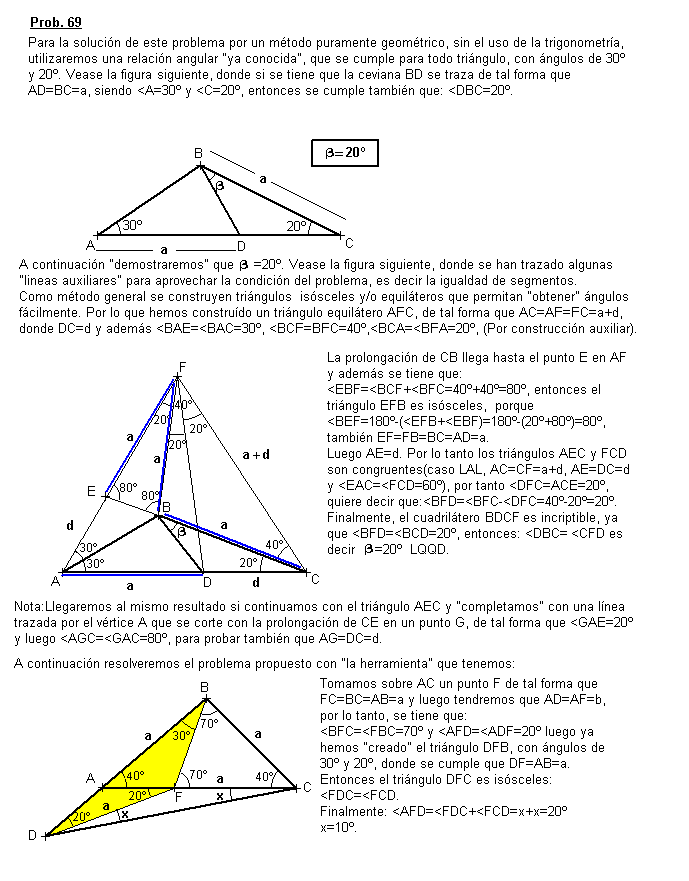

Problema 69
Se tiene un triángulo isósceles ABC con ABC=100º.
Se construye D en la semirecta de origen B que contiene a A tal que CA=BD.
Calcular el ángulo ACD
Solución de Juan Salazar (Puerto Ordaz)
